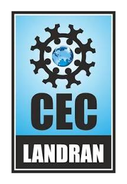
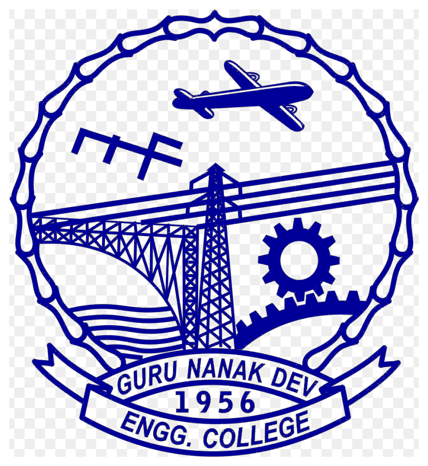
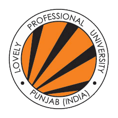
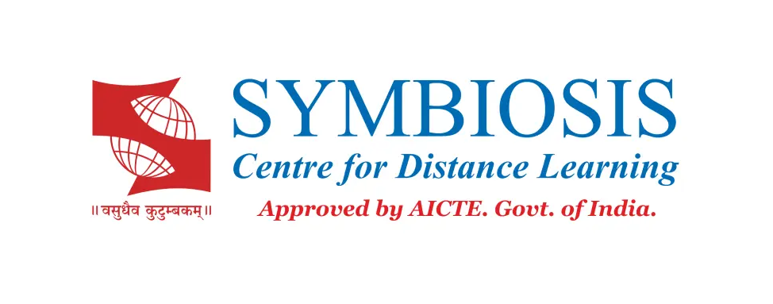
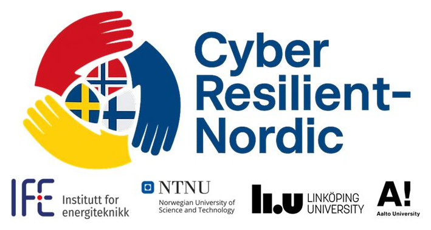

Assistant Professor of Cybersecurity
Gurjot Singh Gaba, Ph.D.
Advancing trustworthy and resilient digital infrastructures through applied cryptography, post-quantum security, aviation cybersecurity, and secure cyber-physical systems.

Research themes
Connected areas of expertise
Each theme connects publications, projects, teaching, talks, and supervision.
Applied Cryptography
Authentication, key establishment, privacy-preserving protocols, and zero-knowledge methods.
Post-Quantum Security
Quantum readiness, crypto-agility, QKD, EuroQCI, and migration governance.
Aviation Cybersecurity
CPDLC, LDACS, future communication infrastructure, ATM risk, and awareness.
Industrial & IoT Security
Industry 4.0/5.0, cyber-physical systems, IT/OT convergence, IoT, and IIoT.
Cyber Resilience
Critical infrastructure, digital sovereignty, zero trust, and risk assessment.
AI-Assisted Cybersecurity
Detection, federated learning, adaptive analysis, and trustworthy decision support.
Career journey
Education and professional experience
Hover or focus on a milestone to reveal more details.

B.Tech.
Electronics and Communication

M.Tech.
Wireless Communications

Assistant Professor
Teaching, research, supervision, and academic leadership

PG Diploma
Business Administration
Ph.D.
Cybersecurity
Postdoctoral Researcher
Mohammed VI Polytechnic University
Postdoctoral Researcher
Linköping University
Assistant Professor
Cybersecurity
Researcher
Post-quantum and quantum-ready infrastructures
Current projects
Selected funded initiatives

In progressCyberResilient-Nordic
National Coordinator & WP Leader · NordForsk
SEC-AIRSPACE
Co-PI · SESAR Joint Undertaking
Digital4Business
Cybersecurity curriculum and academic delivery
Latest news
Recent highlights
ARES 2026
Serving as Publicity Chair in Linköping.
CyberResilient-Nordic
NordForsk-supported network awarded.
IEEE TCE publication
New work on zero-trust Layer 2 VPNs.
Contact
Research collaboration and supervision
For research collaboration, doctoral supervision, invited talks, and funded initiatives.